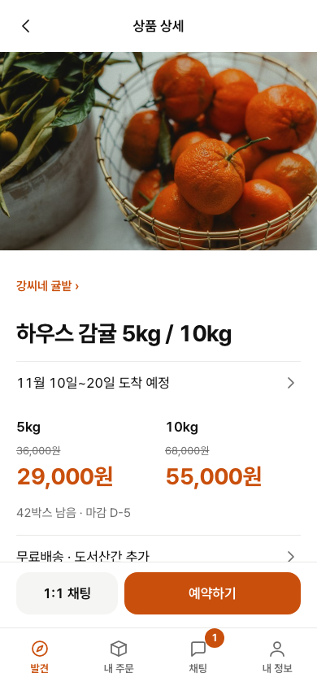
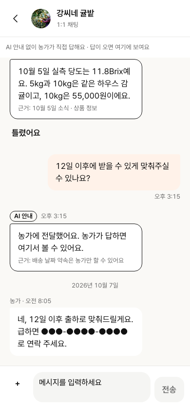
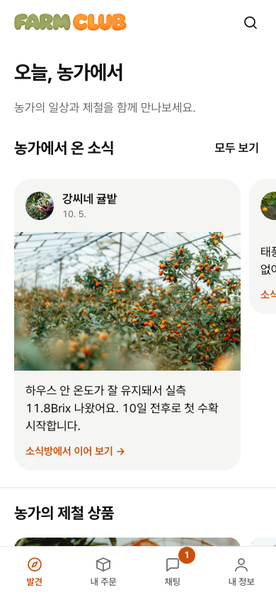
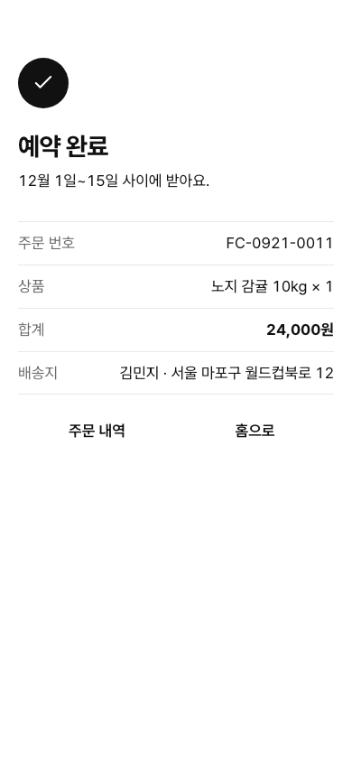
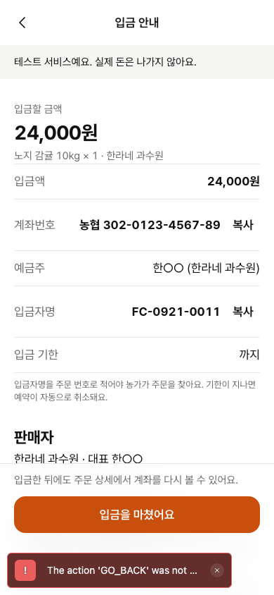
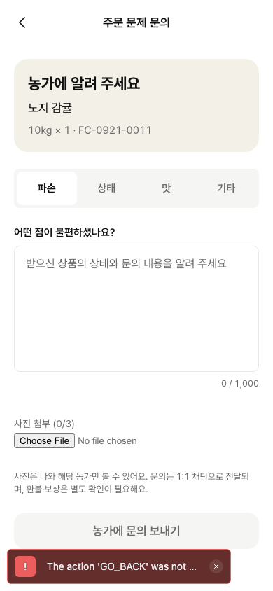
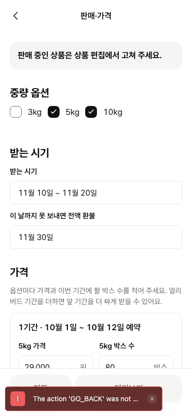
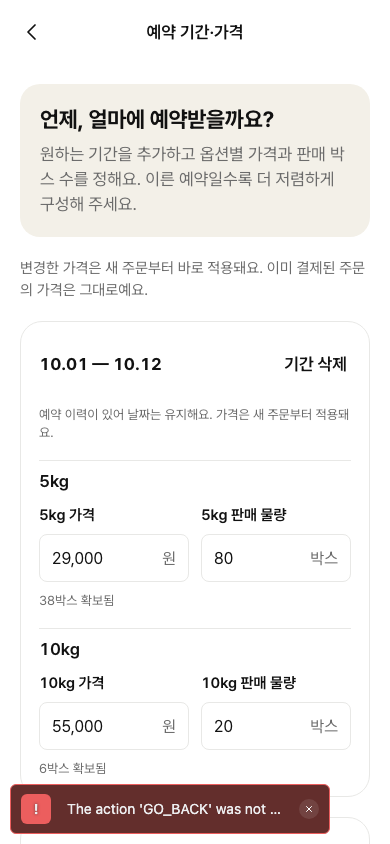
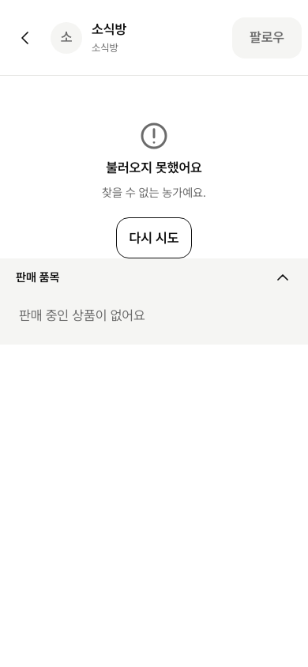
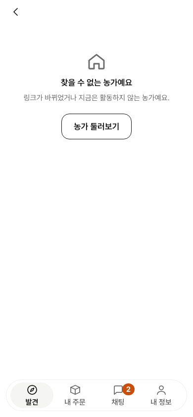

탭 하위 화면과 뒤로 규칙
채팅 탭이 다른 탭에서 연 방을 다시 열고, 새로고침한 화면의 뒤로가 아무 데도 안 가고, 없는 농가 링크가 고장 난 소식방처럼 보인다. 스펙이 정하지 않은 네 가지를 정하고 나면 두 앱의 모든 하위 화면에 뒤로 목적지가 하나씩 생긴다.
무엇이 틀렸나
1. 채팅 탭이 목록이 아니다 재현
상품 → ‘1:1 채팅’ → 뒤로(상품) → 채팅 탭을 누르면 그 방이 다시 열리고, 거기서 뒤로를 누르면 상품 상세로 간다. ia.md는 채팅 탭 첫 화면을 SCR-15 목록으로 정했다.
원인: 채팅 하위 스택에 방 하나만 남고(chats/_layout.tsx), 다른 탭에서 탭을 누르면 남은 스택 그대로 연다((tabs)/_layout.tsx:98). 방의 뒤로는 탭 기록(backBehavior="history")을 타고 다른 탭으로 간다.
2. 내 주문 탭도 같다 재현
주문 완료 화면에서 ‘홈으로’ → 내 주문 탭을 누르면 주문 목록이 아니라 방금 그 완료 화면이 다시 열린다(탭 바도 없다). HE-X3는 코드만 봤는데 이번에 화면으로 확인했다. 생산자 앱 탭도 같은 코드라 같은 구조다.
3. 새로고침 뒤 헤더 뒤로가 안 움직인다 재현 5곳
두 앱의 하위 화면 38곳을 주소로 바로 열고 뒤로를 눌렀다. 33곳은 정해 둔 곳으로 가고, 5곳은 router.back()만 있어 제자리다. 소비자 입금 안내·주문 문의, 생산자 판매·가격·예약 기간·가격·판매페이지 만들기. 불러오는 중이나 오류 상태의 헤더 3곳도 코드상 같다.
4. 없는 농가 링크 재현
/farms/<없는 id>가 헤더 ‘소식방’·아바타 ‘소’·켜진 ‘팔로우’와 ‘불러오지 못했어요 · 다시 시도’를 보인다. ia.md 5장 예외 경로는 ‘찾을 수 없는 농가’ 안내 → 농가 목록(SCR-02)이고, 디자인 보드에 s-03-notfound가 이미 있다.
PM이 정할 것 — 스펙이 말하지 않는 네 곳
ia.md는 탭 첫 화면과 몇몇 화면의 뒤로만 정해 두었다. 아래 네 가지를 정하면 나머지는 표대로 하면 된다. 추천안에 테두리를 쳤다.
a1. 연 화면으로 돌아간다 추천
상품에서 열었으면 상품, 농가 정보에서 열었으면 농가 정보, 주문 상세에서 열었으면 주문 상세. 채팅 목록에서 연 방과 주소로 바로 연 방은 목록으로 간다.
- 소식방 규칙(“뒤로는 이전 화면”, screens.md SCR-03)과 같다.
- HE 재현에서 평가자가 문제 삼은 건 채팅 탭 안의 뒤로였다. 상품에서 연 방 → 뒤로 → 상품은 기대대로였다.
- 방 주소에 이미
productId가 있다. 탭 기록에 기대지 않고 돌아갈 곳을 명시한다.
a2. 언제나 채팅 목록
생산자 앱 소비자별 채팅(chats/[consumerId].tsx:76, 늘 목록)과 같고, navigation-1.3.md:20 “1:1은 해당 목록”을 글자 그대로 따른다.
- 질문하고 상품으로 돌아가려면 발견 탭에서 상품을 다시 찾아야 한다. 상품 상세는 발견 탭 스택이 아니라 숨은 탭이라 발견 탭을 눌러도 상품이 나오지 않는다.
b1. 탭을 누르면 늘 그 탭의 첫 화면 추천
채팅 → 목록, 내 주문 → 주문 내역, 내 정보 → 내 정보, 생산자 상품·채팅·환경설정도 같다. 다른 탭에서 연 방·완료 화면이 탭 첫 화면처럼 남지 않는다.
- ia.md “세 번째 탭 첫 화면”을 그대로 지킨다. 규칙이 하나라 설명·테스트가 쉽다.
- 지금도 이미 켜진 탭을 다시 누르면 첫 화면으로 간다(
_layout.tsx:97). 그 동작을 꺼진 탭에도 똑같이 쓴다. - 잃는 것: 채팅 탭 안에서 방을 보다가 발견 탭에 다녀오면 방이 아니라 목록이 열린다. 목록 맨 위에 그 방이 있어 한 번 더 누르면 된다.
b2. 탭 안에서 연 화면은 기억, 다른 탭에서 연 화면만 지움
iOS 기본 앱에 가깝다. 대신 화면마다 “어디서 열렸나”를 들고 다녀야 하고, 탭 누름 규칙이 둘이 되어 테스트가 두 배다. 주문 완료처럼 탭 바가 없는 화면이 남는 문제는 따로 막아야 한다.
c1. 화면마다 정한 부모 화면(ia.md 계층 표) 추천
아래 규칙 표의 “새로고침·직접 열기” 열이다. 33곳은 이미 이렇게 되어 있고, 빠진 8곳만 채운다. 표에 없는 새 화면은 c2를 기본값으로 쓴다.
- 주문 문의 → 그 주문 상세, 상품 → 그 농가, 생산자 하위 화면 → 상품 목록처럼 맥락을 잃지 않는다.
c2. 언제나 그 탭의 첫 화면
규칙은 한 줄이지만 주문 문의 → 주문 내역(어느 주문이었는지 잃음), 상품 → 홈, 1:1 방 → 목록이 된다. 이미 정해 둔 33곳 가운데 여럿(/farms/:id/info → 소식방, /me/addresses/edit → 배송지 관리 등)을 바꿔야 한다.
(c)에 딸린 작은 결정 — 입금 안내를 새로고침한 뒤 뒤로. 앱 안에서는 스펙대로 주문서(SCR-10)로 간다. 새로고침 뒤에는 그 주문 상세(SCR-14)를 추천한다. 주문은 이미 ‘입금 대기’로 만들어졌고 스펙도 “SCR-13·14에서 이어서 입금”이라고 적었다. 주문서로 보내면 같은 상품의 새 주문서가 열려 두 번 예약할 수 있다.
d1. 그 자리에 안내 화면 + ‘농가 둘러보기’ 추천
디자인 보드 s-03-notfound 그대로다. 헤더는 뒤로만(팔로우·‘소식방’·아바타 없음), ‘찾을 수 없는 농가예요 · 링크가 바뀌었거나 지금은 활동하지 않는 농가예요.’, 버튼 ‘농가 둘러보기’ → SCR-02. 판매 종료 상품 화면과 모양이 같다.
- ia.md 5장 “안내 → 농가 목록”, Linear 완료 조건(“안내와 농가 목록 버튼”)과 같다.
- 404일 때만이다. 네트워크 오류는 지금처럼 ‘다시 시도’.
d2. 바로 농가 목록으로 보내고 토스트
한 번 덜 누른다. 하지만 screens.md 3장에서 토스트는 성공 알림용이고(오류는 화면 안 상자), 링크가 왜 안 열렸는지 설명할 자리가 2초뿐이다. 받은 링크를 눌렀는데 아무 설명 없이 목록이 뜨면 앱이 링크를 잘못 연 것처럼 보인다.
규칙 표 — 소비자 앱
BEFORE는 로컬 스택에서 주소로 바로 열고 헤더 뒤로를 눌러 실제로 간 곳이다(.artifacts/dev224/probe.mjs). AFTER는 추천안(a1·b1·c1·d1) 기준이다.
| 화면 | 들어온 경로 | 헤더 뒤로(앱 안) BEFORE | AFTER | 새로고침·직접 열기 BEFORE | AFTER | 탭 / 탭을 눌렀을 때 |
|---|---|---|---|---|---|---|
| 발견 탭 | ||||||
SCR-01 홈·발견 / | 앱 주소·SNS | 탭 첫 화면(뒤로 없음) | 발견 첫 화면 | |||
SCR-02 농가 목록 /farms | 홈 검색, 내 정보·채팅 빈 상태, 판매 종료 상품, 없는 농가 | 이전 화면 | 이전 화면 | / | / | 발견 안 |
SCR-03 농가 소식방 /farms/:id | 농가 링크, 홈 소식·카드, 농가 목록, 내 정보 팔로우, 상품 농가 줄, 1:1 방 헤더 | 이전 화면 | 이전 화면 | / | /(storefront 1.5) | 발견 안 |
없는 농가 /farms/<없는 id> | 링크 | 이전 화면, 그러나 화면이 고장 난 소식방 | 이전 화면 · 본문 ‘농가 둘러보기’ → /farms | / | / | 발견 안 |
SCR-03 하위 짧은 정보 /farms/:id/info | 소식방 프로필 | 이전 화면 | 이전 화면 | /farms/:id | /farms/:id | 발견 안 |
SCR-04 상품 상세 /products/:id | 홈 카드, 소식방 판매 품목, 주문 상세 | 이전 화면 | 이전 화면 | /farms/:farmId, 불러오기 오류 상태는 back()만(코드 :98) | /farms/:farmId, 오류 상태는 / | 발견 안(숨은 탭) |
| SCR-04 판매 종료 상품 | 같은 링크 | 이전 화면 | 이전 화면 | / | / | 발견 안 |
| 탭 밖(루트 스택) — 주문 흐름 | ||||||
SCR-10 주문서 /checkout/:pid | 상품 옵션 시트 ‘주문서로’, 로그인 복귀 | 이전 화면(상품) | 이전 화면 | /products/:pid, 준비 중 헤더는 back()만(코드 :336) | /products/:pid(두 헤더 모두) | 탭 바 없음 |
| SCR-10 하위 배송지 입력 | 주문서 | 이전 화면 | 이전 화면 | /checkout/:pid | /checkout/:pid | 탭 바 없음 |
SCR-11 입금 안내 /checkout/:pid/pay | 주문서 ‘예약하기’ | 이전 화면(주문서) | 이전 화면(주문서) | 제자리(재현) | /orders/:orderId((c) 딸린 결정) | 탭 바 없음 |
| 내 주문 탭 | ||||||
SCR-13 주문 내역 /orders | 탭 | 탭 첫 화면(뒤로 없음) | BEFORE: 남은 하위 화면(완료 화면 재현) → AFTER: 늘 주문 내역 | |||
SCR-12 주문 완료 /orders/:id/done | 입금 안내(바꿔 열기) | 헤더 뒤로 없음. ‘주문 내역’ → /orders, ‘홈으로’ → / | 같음 | 내 주문 안(탭 바 숨김) | ||
SCR-14 주문 상세 /orders/:id | 주문 내역 | 이전 화면 | 이전 화면 | /orders | /orders | 내 주문 안 |
SCR-32 주문 문의 /orders/:id/inquiry | 주문 상세 ‘주문 문제 문의’ | 이전 화면 | 이전 화면 | 제자리(재현) | /orders/:id | 내 주문 안 |
| 채팅 탭 | ||||||
SCR-15 채팅 /chats | 탭 | 탭 첫 화면(뒤로 없음) | BEFORE: 다른 탭에서 연 방(재현) → AFTER: 늘 목록 | |||
SCR-16 1:1 /chats/:farmId — 목록에서 | 채팅 목록 1:1 | 목록 | 목록 | /chats?view=private | /chats?view=private | 채팅 안 |
SCR-16 — 상품에서 ?start=1&productId= | 상품 상세 ‘1:1 채팅’ | 상품(탭 기록). 그 뒤 채팅 탭을 누르면 이 방, 또 뒤로 → 상품(재현) | (a1) /products/:productId를 명시 | /chats?view=private | (a1) /products/:productId | 채팅 안 |
SCR-16 — 농가 정보에서 ?start=1 | 짧은 농가 정보 ‘1:1 채팅’ | 농가 정보(탭 기록) | (a1) /farms/:farmId/info를 명시 | /chats?view=private | /chats?view=private | 채팅 안 |
| SCR-16 — 주문 상세에서 | 주문 상세 ‘농가에 문의’ | 주문 상세(탭 기록) | (a1) /orders/:orderId를 명시 | /chats?view=private | /chats?view=private | 채팅 안 |
SCR-16 하위 farmclub /chats/support | 채팅 목록 | 목록 | 목록 | /chats?view=private | /chats?view=private | 채팅 안 |
SCR-18 소식방 /news/:farmId | 채팅 소식방 목록 | 이전 화면 | 이전 화면 | / | /(conversation-ui 1.6) | 채팅 안(숨은 탭) |
| 내 정보 탭 | ||||||
SCR-17 내 정보 /me | 탭 | 탭 첫 화면(뒤로 없음) | 늘 내 정보(b1) | |||
내 정보 고치기 /me/profile | 내 정보 | 이전 화면 | 이전 화면 | /me | /me | 내 정보 안 |
배송지 관리 /me/addresses | 내 정보 | 이전 화면 | 이전 화면 | /me | /me | 내 정보 안 |
배송지 추가·수정 /me/addresses/edit | 배송지 관리 | 이전 화면 | 이전 화면 | /me/addresses | /me/addresses | 내 정보 안 |
| 공통 | ||||||
| 개인정보 처리방침·이용약관 | 가입 동의 ‘보기’, 푸터 | 이전 화면 | 이전 화면 | / | / | 탭 바 없음 |
| 로그인·온보딩·카카오 복귀 | 관문 | DEV-222 관문 규칙 그대로(이번 범위 밖) | 탭 바 없음 | |||
규칙 표 — 생산자 앱
생산자 앱은 대부분 이미 고정 목적지(상품 목록·채팅 목록·환경설정)로 간다. 빠진 곳은 상품 하위 화면 셋이다.
| 화면 | 들어온 경로 | 헤더 뒤로(앱 안) BEFORE | AFTER | 새로고침·직접 열기 BEFORE | AFTER | 탭 / 탭을 눌렀을 때 |
|---|---|---|---|---|---|---|
| 현황 탭 | ||||||
SCR-22 현황 / | 로그인 | 탭 첫 화면 | 현황 첫 화면 | |||
SCR-29 출하 처리 /ship | 현황 할 일 | 이전 화면 | 이전 화면 | / | / | 탭 바 없음 |
| 상품 탭 | ||||||
SCR-23 상품 목록 /products | 탭 | 탭 첫 화면 | 늘 상품 목록(b1, 지금은 남은 하위 화면 — 코드상 같은 구조) | |||
SCR-24 새 상품 /products/new | ‘+ 새 상품’ | /products(고정) | 판매페이지 만들기로 넘김 | 상품 안 | ||
판매페이지 만들기 /products/source-analysis?composer=1 | 새 상품 | 이전 화면 | 이전 화면 | 제자리(재현, SourceWorkspace.tsx:406·NewProductComposer.tsx:705) | /products | 상품 안 |
문구 붙여넣기 /products/manual | 자료 분석이 꺼진 서버 | 이전 화면 | 이전 화면 | /products | /products | 상품 안 |
SCR-25 상품 편집 /products/:id/edit | 상품 카드 | 이전 화면 | 이전 화면 | /products, 불러오는 중 헤더는 back()만(코드 :204) | /products(두 헤더 모두) | 상품 안 |
SCR-24b 판매·가격 /products/:id/sell | 판매페이지 만들기 다음 단계 | 이전 화면 | 이전 화면 | 제자리(재현, :164·:382) | /products | 상품 안 |
SCR-26 예약 기간·가격 /products/:id/stages | 상품 카드 ‘기간·가격’ | 이전 화면 | 이전 화면 | 제자리(재현, 헤더 :101, 저장 뒤 :86, 취소 :137) | /products(셋 모두) | 상품 안 |
물량·판매 설정 /products/:id/sales | 상품 카드 ‘판매 설정’ | 이전 화면 | 이전 화면 | /products | /products | 상품 안 |
판매페이지 수정 /products/:id/detail | 상품 카드 ‘판매페이지 수정’ | 이전 화면 | 이전 화면 | /products | /products | 상품 안 |
| 채팅 탭 | ||||||
SCR-28 채팅 /chats | 탭 | 탭 첫 화면(자기 소식방) | 늘 채팅 첫 화면(b1) | |||
소비자별 채팅 /chats/:consumerId | 1:1 목록, 현황 할 일 | 1:1 목록(고정) | 1:1 목록 | /chats?view=private | /chats?view=private | 채팅 안 |
SCR-27 소식 올리기 /broadcast/new | 소식방 첨부 | 이전 화면(쓰던 글 확인) | 이전 화면 | /chats?view=news | /chats?view=news | 탭 바 없음 |
소식방 /news/:farmId | 옛 링크 | /chats?view=news로 넘김 | 채팅 안 | |||
| 환경설정 탭 | ||||||
SCR-33 환경설정 /settings | 탭 | 탭 첫 화면 | 늘 환경설정(b1) | |||
SCR-30 농가 프로필 /farm | 환경설정 | /settings(고정) | /settings | /settings | /settings | 환경설정 안(숨은 탭) |
입금 계좌·항목 고치기·농가 상세 /farm/* | 농가 프로필 | 이전 화면 | 이전 화면 | /farm | /farm | 환경설정 안 |
SCR-31 AI 응답 설정 /farm/ai-settings | 환경설정 | /settings(고정) | /settings | /settings | /settings | 환경설정 안 |
farmclub 문의 /support | 정지·반려 안내, 채팅 | 상태별 고정(정지 /suspended, 반려 SCR-21, 승인 채팅 목록) | 탭 바 없음 | |||
| 개인정보 처리방침·이용약관 | 약관 동의 ‘보기’ | 이전 화면 | 이전 화면 | / | / | 탭 바 없음 |
재현 화면과 AFTER
HE-01 상품에서 연 방이 채팅 탭에 남는다

1 상품 상세 2 ‘1:1 채팅’ → 방
2 ‘1:1 채팅’ → 방 3 뒤로 → 상품(정상)
3 뒤로 → 상품(정상)
4 채팅 탭 → 목록이 아니라 그 방 5 뒤로 → 상품 상세
5 뒤로 → 상품 상세상품에서 연 1:1, 그다음 채팅 탭
productId 있음)의 뒤로도 상품. productId가 없으면 목록.HE-X3 내 주문 탭이 주문 완료를 다시 연다

1 주문 완료 ‘홈으로’ → 홈
2 내 주문 탭 → 주문 완료(탭 바도 없음)주문 완료 뒤 내 주문 탭
HE-X1 새로고침 뒤 헤더 뒤로 무반응 — 재현 4건(390px)

소비자 입금 안내
소비자 주문 문의
생산자 판매·가격
생산자 예약 기간·가격새로고침·직접 열기 뒤 헤더 뒤로
/checkout/p-house/pay?orderId=o-11/orders/o-11/inquiry/products/p-house/sell/products/p-house/stages/products/source-analysis없는 농가 링크
/farms/f-nope
헤더 ‘소식방’·아바타 ‘소’·켜진 팔로우, ‘불러오지 못했어요 · 다시 시도’s-03-notfound
헤더는 뒤로만. ‘찾을 수 없는 농가예요’ · ‘농가 둘러보기’ →/farms도우미 한 줄
// apps/{consumer,producer}/src/lib/nav.ts
export const goBackOr = (router: Router, fallback: Href) =>
router.canGoBack() ? router.back() : router.replace(fallback);
헤더 뒤로·취소·저장 뒤 이동에 맨 router.back()을 쓰지 않는다. 지금 33곳에 흩어진 같은 삼항식을 이것으로 바꾸고, 빠진 8곳에 붙인다. fallback은 위 표의 “새로고침·직접 열기 AFTER” 칸이다.
도우미만으로는 HE-01이 안 고쳐진다
router.canGoBack()은 탭 기록까지 본다. 그래서 채팅 스택에 방 하나만 있어도 참이 되고, 뒤로가 다른 탭으로 간다. HE-01은 도우미가 아니라 (a) 명시 목적지와 (b) 탭 누름 규칙으로 고친다.
로컬에서 빨리 해 본 것: unstable_settings.initialRouteName = "index", 상품 → 방 push에 withAnchor: true, 탭 누름을 늘 navigate(name, { screen: "index" })로 바꾸기. 셋 다 HE-01 흐름이 그대로였다(되돌림). 구현 때는 탭 누름에서 하위 스택을 첫 화면으로 되돌리는 동작(StackActions.popToTop이나 하위 스택 reset)을 Playwright로 먼저 확인한다.
승인 뒤 바뀌는 코드 (일반 위험, 서버·API 변경 없음)
소비자 apps/consumer
src/lib/nav.ts(새):goBackOr(tabs)/_layout.tsx: 탭 누름 → 늘 첫 화면(b1)(tabs)/chats/[farmId].tsx:productId·from로 목적지 명시(a1).farms/[farmId]/info.tsx·orders/[orderId]/index.tsx는 방을 열 때from을 붙임- 죽은 뒤로:
checkout/[productId]/pay.tsx,orders/[orderId]/inquiry.tsx,checkout/[productId]/index.tsx:336,products/[productId].tsx:98 - 없는 농가(d1):
src/lib/FarmRoom.tsx404 분기(헤더 뒤로만, 안내 + ‘농가 둘러보기’) - 나머지 삼항식 →
goBackOr(동작 그대로)
생산자 apps/producer
src/lib/nav.ts(새):goBackOr(tabs)/_layout.tsx: 탭 누름 → 늘 첫 화면(b1)- 죽은 뒤로:
products/[id]/sell.tsx:164·382,stages.tsx:86·101·137,edit.tsx:204,lib/NewProductComposer.tsx:705,lib/SourceWorkspace.tsx:406 - 나머지 삼항식 →
goBackOr(동작 그대로)
테스트 계획
Playwright scripts/e2e/back-rules.spec.ts(새)
- 상품 → ‘1:1 채팅’ → 뒤로 →
/products/p-house, 채팅 탭 →/chats목록이 보임(HE-01) - 채팅 목록 → 방 → 뒤로 → 목록
- 주문 완료 ‘홈으로’ → 내 주문 탭 →
/orders(HE-X3) - 표 전체를 한 묶음으로: 주소로 바로 열기 → 헤더 뒤로 → 표의 AFTER 목적지(소비자 25줄·생산자 13줄, 이번
probe.mjs를 테스트로 옮김). 새로고침 뒤 뒤로가 제자리인 화면이 0개(HE-X1) - 생산자 상품 하위 화면 → 상품 탭 →
/products /farms/f-nope→ ‘찾을 수 없는 농가예요’, 팔로우 버튼 없음, ‘농가 둘러보기’ →/farms
Mock·정적 검사
scripts/test-back-fallback.mjs(새,test:mock이 글롭으로 모음):apps/*/src에canGoBack·goBackOr없는 맨router.back()이 0개npm run typecheck,npm run test:mock전체- 기존 Playwright 중 뒤로·탭을 쓰는
conversation-ui·discovery-and-gates·checkout-logout·consumer-support다시 돌림
같이 고칠 스펙 줄
docs/spec/ia.md 4장 — “뒤로 규칙” 절 추가
헤더 뒤로는 앱 안의 이전 화면으로 간다. 이전 화면이 없으면(주소로 바로 열기·새로고침) 아래 표의 부모 화면을 연다. 하단 탭을 누르면 언제나 그 탭의 첫 화면이 열리고, 다른 탭에서 연 하위 화면을 남기지 않는다. 상품 상세·농가 정보·주문 상세에서 연 1:1의 뒤로는 연 화면이고, 채팅 목록에서 열었거나 주소로 연 1:1은 목록이다(DEV-224).
+ 화면별 부모 표(위 두 표의 “새로고침·직접 열기 AFTER” 열).
5장 예외 경로 ‘없는 농가’ 줄: “헤더는 뒤로만, 팔로우 버튼 없음”을 덧붙임.
docs/spec/screens.md
- 3장 새 줄 뒤로·탭 첫 화면(DEV-224): “헤더 뒤로는 이전 화면, 없으면 ia.md 4장 부모 화면. 맨
back()만 쓰지 않는다. 탭을 누르면 늘 첫 화면.” - SCR-11 버튼 동작: “뒤로 → 주문서. 새로고침·직접 열기면 주문 상세(SCR-14).”
- SCR-16 버튼 동작: 1:1 방 뒤로 목적지(a 결정).
- SCR-03 상태: “404 → ‘찾을 수 없는 농가예요’와 ‘농가 둘러보기’(SCR-02), 헤더는 뒤로만.”
그 밖
docs/spec/navigation-1.3.md:20“1:1은 해당 목록” → “1:1을 주소로 열면 목록, 상품·농가 정보·주문 상세에서 열면 연 화면(DEV-224)”docs/wiki/Requirements-and-Specifications.md영문 한 줄- Figma v6: 이동 규칙은 해당 없음. 없는 농가 화면은 Figma에 프레임이 없어(디자인 감사 C2) 구현 PR에서 추가하거나 후속 이슈
PM에게 묻는 것
- (a) 상품·농가 정보·주문 상세에서 연 1:1의 뒤로: a1 연 화면(추천) / a2 늘 목록
- (b) 탭을 눌렀을 때: b1 늘 첫 화면(추천) / b2 탭 안에서 연 화면은 기억
- (c) 이전 화면이 없을 때: c1 화면마다 정한 부모(추천) / c2 늘 탭 첫 화면. 그리고 입금 안내 새로고침 뒤 뒤로: 주문 상세(추천) / 주문서
- (d) 없는 농가: d1 안내 화면 + ‘농가 둘러보기’(추천, 보드
s-03-notfound) / d2 농가 목록으로 보내고 토스트